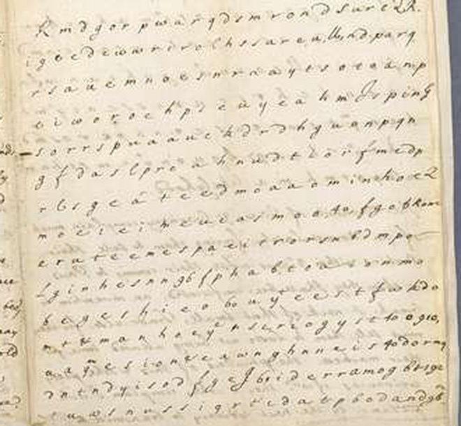
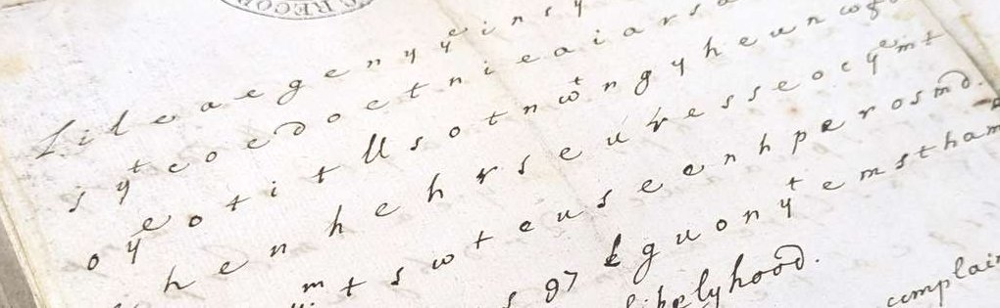

At a glanceKey recovered from ciphertext-only, after the published break · 409 of 414 plaintext cells
- The letter
- William Perwich, the English agent at the French court, to Henry Bennet, Lord Arlington, Secretary of State, Paris, 9 April 1670 (New Style). A clear despatch of court news with 22 lines of jumbled letters on its third and fourth pages.
- Where
- The National Archives, Kew, SP 78/129 f. 180. Published as an open challenge on the TNA blog on 4 August 2025; transcribed by Satoshi Tomokiyo in September 2025. Not on DECODE.
- The cipher
- A columnar transposition with 20 columns. Each column was written out as one line and padded with nulls at its end, and two whole lines of nulls frame the block. Five numbers inside the text are code names.
- How the key was found
- A hill-climber scored orders of the 20 lines with English four-letter statistics and found the column order without the plaintext. That came after the TNA had announced the system, and after this project’s own first diagnosis, a substitution, had failed.
- What it says
- The soldiers grumble that the King has grown cool towards them and is given up to his mistresses; the King told his brother not to oppose Madame’s journey, “for the interest of his kingdome”.
- Still open
- The code numbers 40, 60, 61, 96 and 97. The TNA gives tentative readings from the context (England, the King, Colbert, the Dutch); no key for them is known.
- Credit
- Broken first, independently, by Matthew Brown and by George Lasry, Norbert Biermann and Satoshi Tomokiyo (announced 14 October 2025). Nothing in the text is new here.
01 The letter
William Perwich was the English agent in Paris from 1669 to 1677 and wrote his news to Lord Arlington’s office; his despatches were edited by M. Beryl Curran for the Camden Society in 1903. The despatch of 9 April 1670 (30 March in England’s Old Style, as the docket has it) is ordinary court news: Godolphin is expected, the King has come to Paris, a Guernsey merchant’s goods have been seized under the droit d’aubaine, the French have handed an English ship back to the Algerine pirates, the King’s journey to his new fortifications is near. In the middle of the letter, filling the foot of page 3 and the head of page 4, stand 22 lines of single letters, spaced evenly, with a few numbers and scribal abbreviations among them. The clear text resumes after the word likelyhood. Curran’s 1903 edition prints this despatch (pp. 82–83) and passes over the block without a mark: its rule was to print only the deciphered portions of ciphered letters, and no decipherment of this one had come down with it.

Ruth Selman of the National Archives published the letter on 4 August 2025 as a challenge (Hidden in plain sight: an undeciphered letter from Louis XIV’s France
), and Satoshi Tomokiyo posted a cell-by-cell transcription of the 22 lines on his Cryptiana blog in September. That transcription is the ciphertext used here: 493 cells before likelyhood.
02 The first diagnosis, and why it was wrong
This project’s first notes on the letter (15 September 2026) argued that the block was a substitution, not a transposition. Both tests behind that argument were misapplied.
- The frequency test was distorted by the nulls. Against English letter frequencies the whole grid scores a chi-squared of 159.7, which looked too high for a transposition (a transposition keeps the plaintext’s letters). But the grid holds 8 q’s where English text of this length would have about half of one, and q alone contributes 106.4 of the 159.7. On the plaintext cells alone the figure is 28.0, ordinary English. The other half of the argument, that the sorted frequency profile has the shape of English, is also what a transposition gives, so it could not decide between the two.
- The repeat test looked at the wrong unit. A digram-repeat test treated the vertical columns of the layout as the columns of the transposition. The columns of the cipher are the lines as written, so the test examined the wrong object and could only return noise.
- The cells themselves showed a transposition. The abbreviations ye, yt, ym, wt and & stand in the block intact. A substitution would have enciphered them letter by letter; a transposition moves cells without changing them.
The substitution solvers run under the wrong diagnosis (masc.py, stream.py, segclimb.py, routes.py) are kept in the folder as the record of that turn. A search then found the TNA’s announcement of 14 October 2025 that the letter had been broken twice as a 20-column transposition with nulls.
03 The structure
- Lines 2 to 21 are the 20 columns. The encipherer wrote the plaintext into 20 columns, then copied each column out as a line in a scrambled order and padded its right-hand end with nulls. That is why six of the eight q’s sit at the right margin, which is what first pointed the 2025 solvers to nulls.
- Lines 1 and 22 are whole lines of nulls framing the block: R m d g o r p w a r q d s m r o n d s u r c QR (23 cells) and m d p o r m h m a (9 cells).
- Read across the columns depth by depth in key order, the block gives 414 plaintext cells: 20 full rows of 20 and 14 cells of a 21st. That equals the number of tokens in the published plaintext. The other 79 cells are nulls: 47 column tails and the 32 cells of the two framing lines. The code numbers 910 and 192 fall among the tails.
- The key, as the transcribed line numbers in the order the plaintext reads them: 15 20 19 17 18 21 16 14 2 4 3 5 6 7 13 12 11 10 9 8.

The key was recovered with a hill-climber over the order of lines 2–21, scoring each order by English quadgram statistics over the first 19 rows (where no column has yet run into its nulls). It does not use the published plaintext. It returns the cyclic sequence of the columns; where the cycle starts is fixed twice over, by the text (row 0 ends …grumble m, row 1 begins uch) and by the column lengths, since the 14 columns that carry a 21st plaintext cell must come first.
04 The plaintext
As the transcription gives it, in key order, abbreviations bracketed:
shcsouLdiersgrumbLemuch[yt][ye]kingisoflategrownecooltewards[ym]&giues[ym]not[ye]eneouragem entinthciraddressesasheeusedtheyeomplainheeiswhoUygiwenuptohismmstresseswhoarenoeneeiesto[97] norpeaee&eonsuqnentkydissuade[ye][60][96]pcrsuing[ye]frenchmanufaatere[wt]uigourknows[yt]pe sceeanoneCyaduaneehimdnsignsIheardagreatoahsay[yt][ye][61]saydtohisbrotperheaishthimaotto[40] peosemadamsgoingforfbrcausherIourneywasgoo[ye]interestofhiskinodsmewheruponmostdob6amtofaha Uiapce
The published text (Brown; Lasry, Biermann and Tomokiyo; TNA blog, 14 October 2025):
The souldiers grumble much that the king is of late growne cool towards them and gives them not the encouragement in their addresses as hee used. They complain hee is wholly given up to his mistresses who are no enemies to 97 nor peace and consequently dissuade the 60 96 pursuing the French manufactere with vigour knows that peace can onely advance his designs I heard a great man say that the 61 sayd to his brother he wisht him not to oppose madam’s going for 40 becaus her journey was for the interest of his kingdome wherupon most do boast of an alliance [likelyhood]
Every difference between the two is a transcription slip of a familiar kind, not a cipher effect: c and e confused throughout (eneouragement, eomplain, peaee), U for ll (whoUy, which confirms Tomokiyo’s own doubt about that sign), 6 for o in boast, mm for mi in mistresses, and in line 8 a 40 and an f in swapped order. The TNA adds that Perwich himself left out a couple of letters when he enciphered. The word likelyhood, written in clear after the block, finishes the last sentence: “most do boast of the likelihood of an alliance”.
In April 1670 Henrietta Anne, Madame, Charles II’s sister and the wife of Louis XIV’s brother, was about to cross to Dover to negotiate what became the secret Treaty of Dover. Perwich reports that Louis told his brother not to oppose the journey. He shows no sign of knowing what the treaty would contain.
05 What stays open
- The code numbers 97, 60, 96, 61 and 40. They belong to a separate nomenclator whose key is not known; the TNA notes there were two numbers for each person or place. Its tentative readings from context: 97 = the Dutch, 60 = the King, 96 = Colbert (starting a new sentence), 61 = the King, 40 = England. Graded C (context only) here as there. The numbers 910 and 192 among the column tails are taken as nulls.
- Which cells are nulls can be settled only by length and sense; without Perwich’s key the exact count cannot be proved, as the TNA also says.
- The transcription slips listed above would need the manuscript to settle cell by cell. None changes a word of the reading.
06 Method and files
All in perwich/. perwich.txt is Tomokiyo’s transcription with the clear text; plaintext_tna.txt the published decipherment, used only to check. python solve20.py 10 runs the keyless climb over lines 2–21 from ten random starts; python solve20.py report prints the plaintext in key order, the nulls, and the chi-squared of the whole grid and of the plaintext cells alone.
07 Sources
- The National Archives, Kew, SP 78/129 f. 180: William Perwich to Lord Arlington, Paris, 9 April 1670 (NS).
- Ruth Selman,
Hidden in plain sight: an undeciphered letter from Louis XIV’s France
, TNA blog, 4 August 2025 (the challenge and the page images). - Ruth Selman,
Secret diplomatic message deciphered after 350 years
, TNA blog, 14 October 2025 (the two solutions, the plaintext and the tentative code readings). - M. Beryl Curran (ed.), The Despatches of William Perwich, English Agent in Paris, 1669–1677, Camden Third Series 5 (London 1903), pp. 82–83 for this letter, cipher omitted; Internet Archive.
- Satoshi Tomokiyo, transcription on Cryptiana, September 2025.
Notes, scripts and the transcription: perwich/ in the repository.